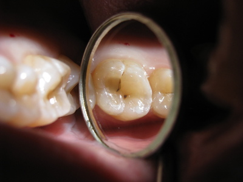
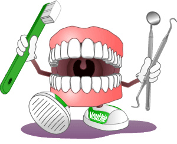
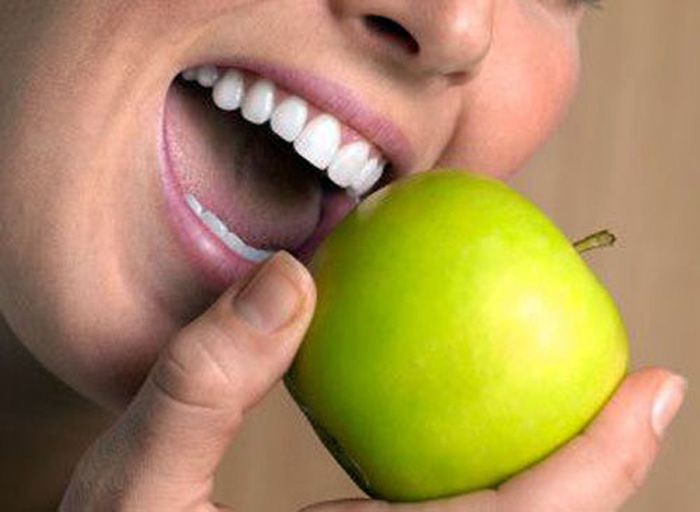

Кариес зубов
Кариес – это болезненное поражение зубов, которое, несмотря на возможность его избежать, всё ещё является самым распространённым явлением.
Развитие кариеса связано с ненадлежащей гигиеной ротовой полости и с употреблением сахаросодержащих продуктов питания и напитков. Так как бактерии зубного налёта превращают сахара во вредные для зубов кислоты, под воздействием этих кислот эмаль теряет большое количество минералов, вследствие чего происходит её разрушение. Вот почему после еды обязательно нужно прополоскать ротовую полость ополаскивателем и тем самым устранить кислотную среду.
Кариес является инфекционным заболеванием. Ребенок рождается без кариесогенных бактерий, но родители, имеющие кариес передают бактерии ребенку через поцелуи и тем самым не берегут зубки своих малышей.
Подведя итог, можно вывести самые основные причины появления кариеса:
- употребление пищи с высоким содержанием углеводов;
- неудовлетворительная гигиена ротовой полости.
Также могут способствовать развитию кариеса:
- гормональные изменения в организме;
- недостаточный уровень слюноотделения;
- повышенная кислотность в полости рта;
- хронические заболевания иммунной и пищеварительной систем.
Внимание!!!
Если Вы обнаружите на поверхности зубов белые, желтые или коричневые пятна, а также когда зуб реагирует на холодную и горячую пищу, сладости – эти признаки могут свидетельствовать о кариесе зубов. Необходимо срочно обратиться к стоматологу.
И самый интересный вопрос. Можно ли предупредить развитие кариеса? Можно.
|  |  |
Для этого нужно желание, качественные средства гигиены полости рта и конечно же тщательное проведение процедур. Вам потребуется не только зубная паста и щетка, но и другие вспомогательные средства гигиены, такие как зубные нити, ершики и ополаскиватели. Также необходимо уменьшить употребление углеводом и отдавать предпочтение молочным продуктам, овощам и фруктам. И самое главное – это здоровый образ жизни. Если Вы здоровы и ухаживаете за ротовой полостью, то Ваши зубы будут в порядке.
Рекомендуемые записи:
Выбор зубной пастыЧитать Выбор зубной щеткиЧитать Повышенная чувствительность зубовЧитатьРекомендуемое видео:
Как бороться с кариесом
О чем говорит зубная боль?
Диагностика галитоза - неприятного запаха изо рта